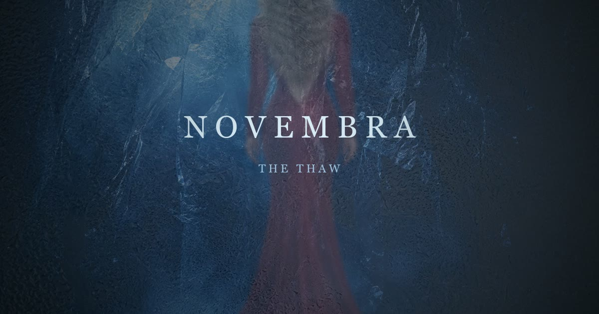

A mão
Arrastar limpa a condensação por onde o dedo passa, como num vidro embaçado. O gelo reembaça sozinho depois de alguns segundos, então nada fica resolvido de graça.
Estudo de caso · 2026
Construí uma cena web interativa em que a artista aparece presa num bloco de gelo e só é revelada pelo esforço de quem está do outro lado da tela. Sem scroll, sem vídeo: tudo acontece ao vivo no navegador, no celular, com o dedo.

Campanha de artista quase sempre pede que o público assista. Aqui ele trabalha. A cena abre completamente congelada, sem dar nem pra saber quem está lá dentro, e cada gesto de quem está do outro lado derrete um pouco do gelo. A temperatura na tela sobe de −20 °C a 0 °C conforme o esforço, e o que foi conquistado fica registrado.
Mas o gelo nunca quebra. Por mais que a pessoa insista, as rachaduras se refazem e a tela responde “the ice holds”, com a contagem de dias que faltam. Ele só cede na data da campanha. É uma promessa que resiste, e um motivo pra voltar amanhã.
Arrastar limpa a condensação por onde o dedo passa, como num vidro embaçado. O gelo reembaça sozinho depois de alguns segundos, então nada fica resolvido de graça.
Tocar crava uma trinca que nasce no ponto exato do toque e se ramifica. Insistir leva o bloco ao limite, e é aí que ele resiste e mostra quantos dias faltam.
Deslizar varre a névoa num arco largo e empurra os cristais na direção do gesto. É o contraponto amplo ao toque pontual dos outros dois.
Concebo e construo experiências web interativas para campanhas de música, moda e entretenimento: da direção de arte à implementação, incluindo o tratamento dos assets e a performance no celular. Esta peça foi feita do conceito ao código.
Peça autoral, criada por iniciativa própria como demonstração de capacidade técnica e criativa. A artista, o nome e o evento são fictícios, e a figura na cena é um mockup gerado por IA. Conceito, direção de arte e implementação de Gabriella Costa.